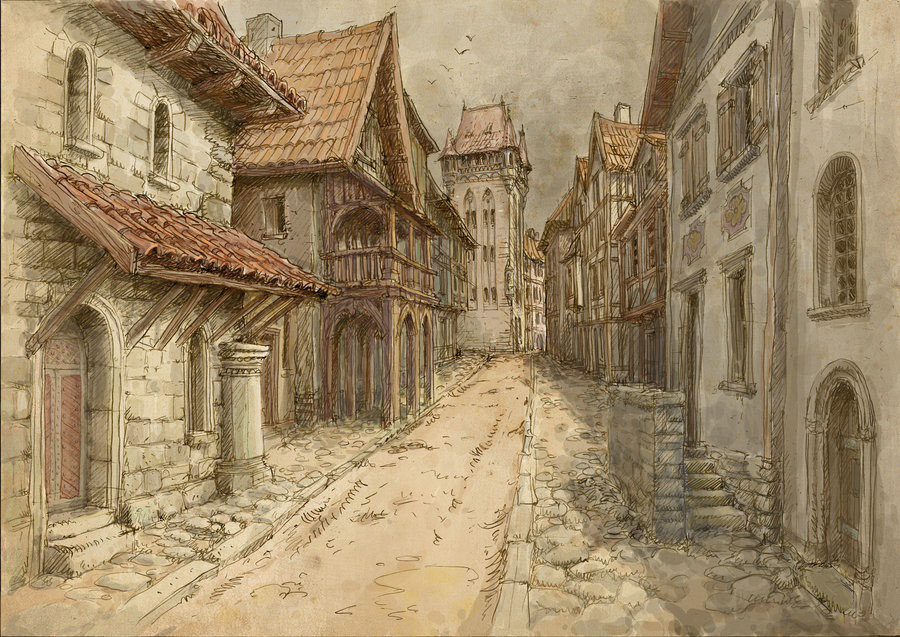

Vous ignorez les conseils du sage, vous décidez de ne pas retracer vos pas et prennez le droit chemin au bouleau.

Vous arrivez après quelques minutes au village du vieux sage. En suivant ses conseils, vous avez mis plusieurs jours à arriver jusqu'au fort. Vous aurez-il mentis ? Vous allez immédiatement à la taverne pour vous reposer de vos péripéties.